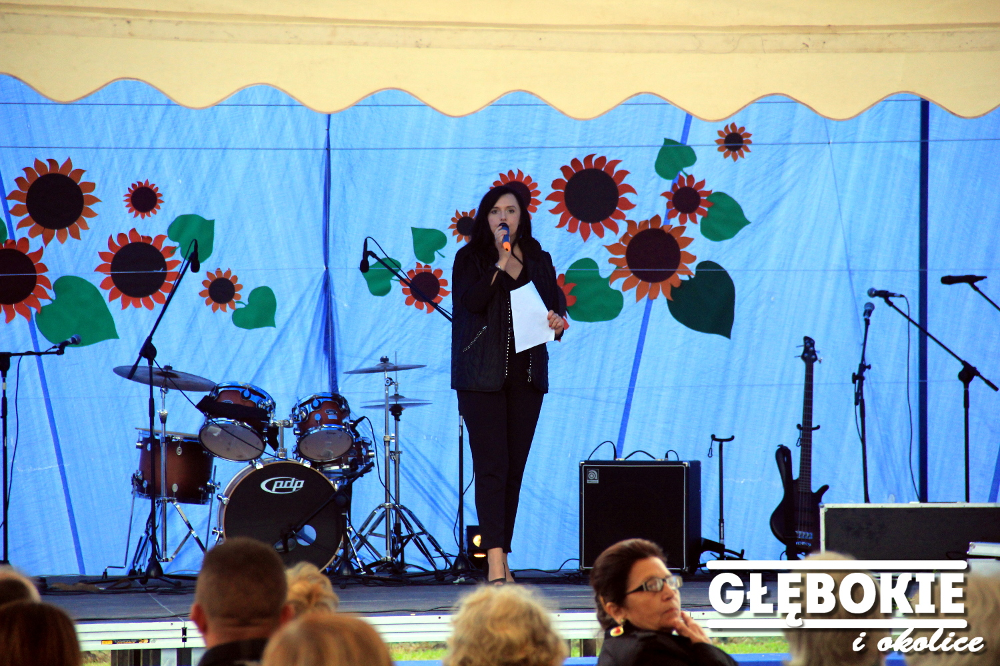

<html> 
<head>
	<title>Głębokie i Okolice </title>
	<meta http-equiv="Content-Type" content="text/html; charset=UTF-8">
	<link rel="stylesheet" href="style.css" type="text/css" /> 
	<meta name="description" content="Zobacz co się działo w gminie!" />
	<script src="http://www.glebokieiokolice.cba.pl/bb_fbslider.js"></script>
</html>

<body>

	<div id="container" />
	<div id="logo" />    </div>
	<div id="nav" /> 
		<div id="main" /> <a href="index.html" /> Strona Główna </a> </div>
		<div id="glebokie" /> <a href="glebokie.html" /> Głębokie </a> </div>
		<div id="gmina" /> <a href="gmina.html" /> Gmina </a> </div>
		<div id="powiat" /> <a href="Powiat.html" /> Powiat </a> </div>
		</div>


	<div id="content" />
	<div style="border-top-style:double" />
	<div class="info" /> <div class="half" />  </div> <div class="rhalf" /> <div class="link" /> <a href="bal-gimnazjalny-2018.html" /> Jak przyszli uczniowie szkół średnich bawili się na balu (zdjęcia) </a> </div> </br> Bal Gimnazjalny to pierwszy krok w dorosłość oraz możliwość złapania głębszego oddechu przed testami gimnazjalnymi od których będzie zależeć przszłość większości absolwentów. Szkoła w Cycowie zorganizowała uroczystość wyciskającą łzy rodziców, nauczycieli, dyrekcji która mogła nareszcie spojrzeć na swoje pociechy jak na dorosłych. Gdy dyrektor szkoły.... <a href="bal-gimnazjalny-2018.html"/> (Czytaj Dalej) </a> </div> </div>
	<div style="clear:both" /> </div>
	<div class="info" /> <div class="half" />  </div> <div class="rhalf" /> <div class="link" /> <a href="dozynki-2017.html" /> Dozynki Gminno-Parafialne Cyców 2017 (zdjęcia) </a> </div> </br> Dnia 03.09.2017 odbyły się dożynki gminno-parafialne w Cycowie. Niestety tego dnia organizatorów zaskoczyła ulewa co pewnie zniechęciło wielu z was do przybycia. Dla osób które jednak dotarły mimo złej pogody postawiono namiot zarówno nad widownią jak i sceną dla artystów.... <a href="Dozynki-2017.html" /> (Czytaj Dalej)  </div> </div>
	<div style="clear:both" /> </div>
	</div> </div></div> </div>

</body>

</html>